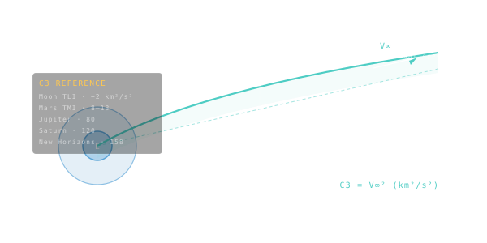

C3 — Characteristic Energy
How much energy per unit mass a rocket needs to leave Earth's gravity well with leftover speed — the standard launch-energy metric.

101 · zoom in
C3 is mission-engineer slang for one specific question: how hard does the rocket have to throw the spacecraft? It's the energy that's left over once you've climbed out of Earth's gravity well. C3 = 0 means you exactly escape Earth, arriving at infinity with zero speed left. C3 above zero means you got out with extra speed to spare — and that extra speed is what carries you toward Mars or Jupiter or wherever.
It's measured in km²/s² (which looks weird but is just velocity squared) so the numbers stay manageable. Mars typically wants C3 = 8 to 12. Direct flights to Jupiter need C3 around 80. New Horizons launched with C3 = 158 — the highest ever — to reach Pluto in nine and a half years instead of decades.
Why does this number matter so much? Because every rocket has a published C3-vs-payload curve. As C3 climbs, the rocket can deliver less mass. Falcon Heavy can throw 16 tonnes at C3 = 10, but only 5 tonnes at C3 = 80. The very first decision in mission design is matching the destination's C3 requirement to a rocket that can lift your spacecraft at that energy. Get this wrong and the mission can't fly.
C3 is the square of the hyperbolic excess velocity. Units: km²/s². It tells you how much energy beyond escape your launch vehicle has to deliver. C3 = 0 means you barely escape Earth's gravity, arriving at infinity with zero speed. C3 = 25 km²/s² means you arrive with V∞ = 5 km/s of leftover heliocentric velocity.
Launch vehicles are characterised by their C3-vs-payload curve. Falcon Heavy can throw ~16 tonnes to C3=10, but only ~5 tonnes to C3=80. Mars typically wants C3 around 8-12. Jupiter direct: C3 around 80. New Horizons launched with C3 = 158 km²/s² — the highest of any mission ever — to make the trip to Pluto in just 9.5 years.
On Orrery's `/missions` FLIGHT tab the C3 of each interplanetary mission is the canonical first-row data point. It's the single number that captures 'how hard was it to launch.'